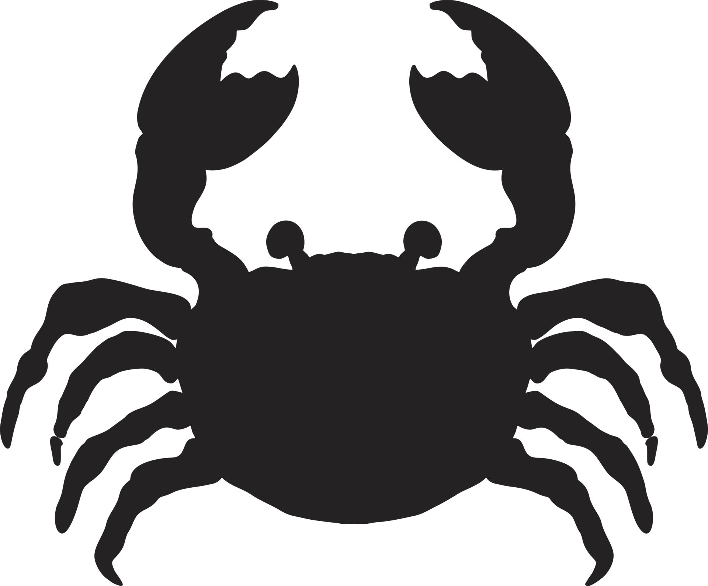
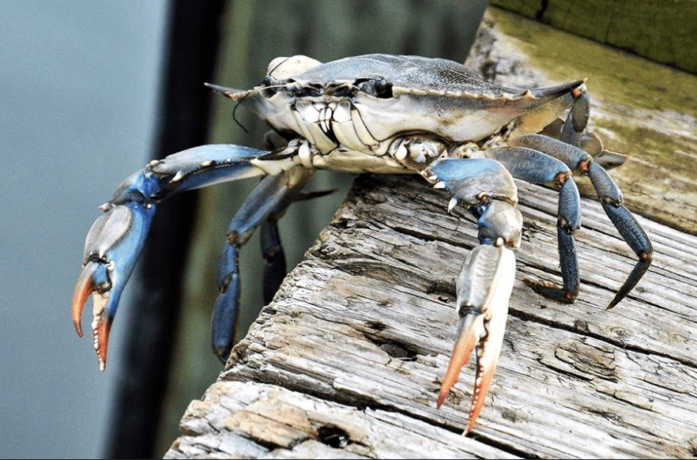
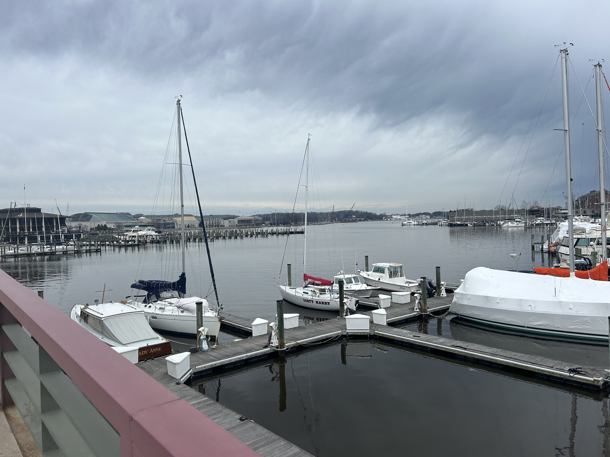

Understanding the Maryland Blue Crab population (2013-2023)

By Sofia Appolonio
Climate change is the defining issue of this generation, however, the problem manifests itself in multiple ways. Due to the more in-land location of Maryland and minimal natural disasters, it’s tough to see the immediate effects of climate change in our state. Unfortunately, the crisis has hit a beloved emblem of our state — the Chesapeake Bay blue crab.
The blue crab isn’t only an essential part of Maryland iconography, but a critical component of the state’s ecosystem and economy. The crabs have the highest value among commercial fisheries, according to the Maryland Department of Natural Resources. With around 14 million pounds of crab equaling nearly 31 million dollars in dockside value in 2022, according to the official Maryland state website. These beautiful location in Annapolis wouldn't be made possible without the economy of the blue crab
The population continued to waive later in the decade, with data showing the population hitting 254 million in 2017 before dipping again to 247 million in 2018, according to Chesapeake Progress. By calculating the total crab population, the Chesapeake Bay foundation found that in 2022, the population hit its lowest number of blue crabs since 1990.
There are multiple factors that contribute to the fluctuation of the crab population. The bay’s underwater grasses — a food source for the crabs — have experienced a decline in addition to rising water temperatures and abundance of predators, according to the Chesapeake Bay foundation. Furthermore, rising unpredictable weather patterns, growing pollution and overfishing in the bay have hit the overall population hard.
In a recent 2023 report from the Virginia Marine Resource Commission, there is a low abundance of juvenile crabs, landing at only 116 million crabs, and is at one of the sixth lowest juvenile populations in the 34 years of the Winter Dredge Survey, according to the report. This lack of juvenile’s come from large-scale overfishing done in the 1990s and late 2000’s, according to the Chesapeake Bay Program.
Thankfully, there have been signs of improvement in the bay. In the same report, the survey;s found that all categories of blue crabs have shown an increase in population, and that the management of overfishing is predominantly successful. Nevertheless, the report suggests changing the benchmark to accommodate the historic low numbers seen in 2022, which highly indicates that there is still much work to be done in preserving the population.
check out more of their lifestyle here!
This brings us to the big question: How can we help the crab population? First, preventing littering and being cautious of your carbon footprint is essential, and that it’s critical to understand where your trash is going in your community.
Additionally, educating yourself about who is fishing the crabs and where they’re coming from — as well as waiting for crabs in season — aids in preventing overfishing. On a larger scale, it’s important to educate yourself on where local politicians and community leaders stand on issues of climate change and water quality.


top photo provided by the Chesapeake Bay Foundation, second one is an original